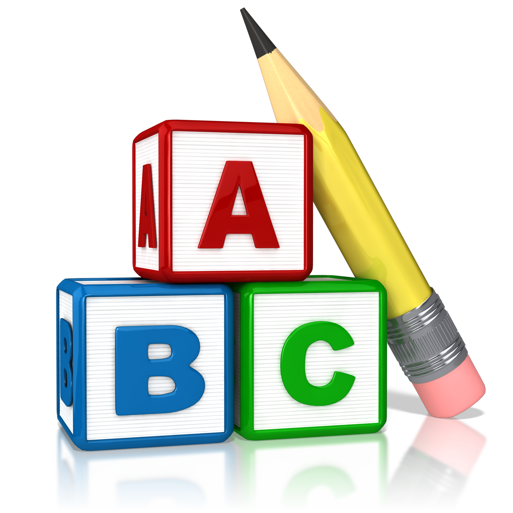
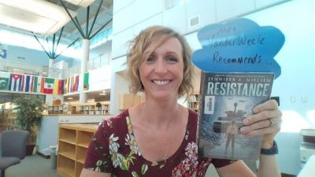

Hello, I'm Wendy VanderWeele
Please take a look to learn a little more about me, both personally and professionally

Education Outline
- Graduated from Western Michigan University 2005
- BA in English Education
- Certified to teach English and History for grades 6-12
- Graduate Certificate in Library and Information Sciene from Wayne State 2022
- ND (Libary Media) Endorsement on Teaching Certificate 2022
Professional Work
- Public Youth Library Assistant 2018
- Library Aide, Gull Lake Schools 2019-2023
- High School/Middle School Librarian - Lakeview School District 2023-present
I've always had a love of literature, but I've found my way to being a librarian a little later in life. Through my own children, I discovered how much joy I got from creating a love of reading with them. Reading to them became my favorite pasttime, and it soon developed into a desire for me to make it my profession.

Hobbies
In my spare time I love to read, have fun with my family on the lake, bike, and garden.